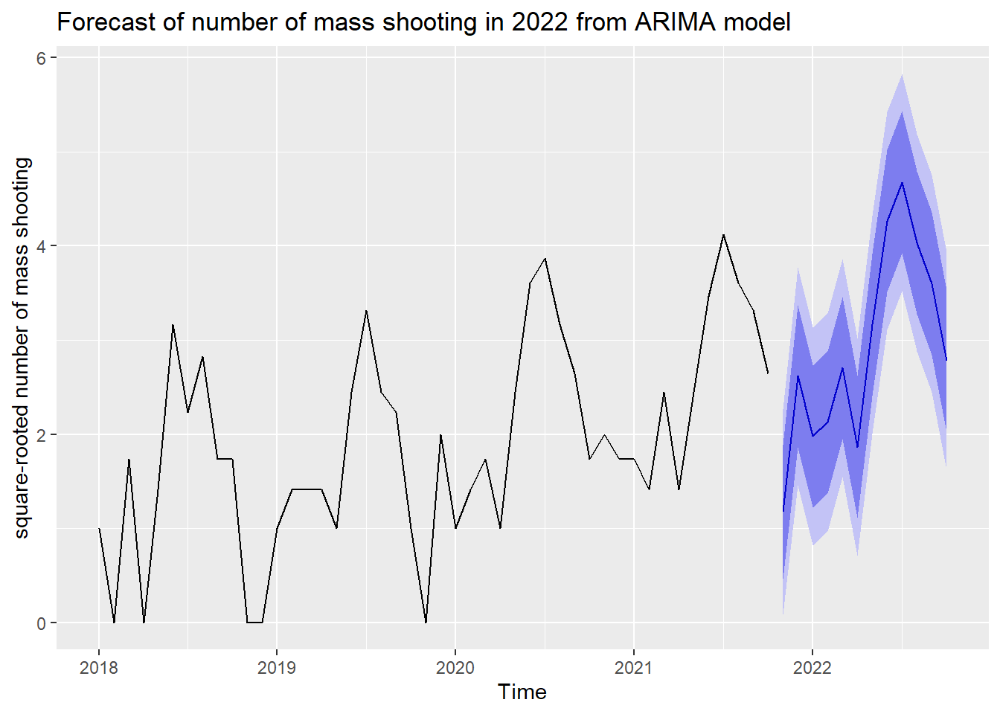

library(tidyverse)
library(fUnitRoots)
library(forecast)
library(tseries)
unemploy =
read_csv("data/Unemployment_renamed.csv") %>%
separate(label, into = c("year", "month")) %>%
dplyr::filter(year != 2017)
unemploy = dplyr::rename(unemploy, state = series_id)
gun_violence =
read_csv("data/year_month_state_massshooting.csv") %>%
mutate(year = year + 2000) %>%
mutate(year = as.character(year))
new_dataframe =
left_join(unemploy, gun_violence, by = c("state" = "state", "year" = "year", "month" = "month")) %>%
select(-...1, -period) %>%
mutate(number_mass_shooting = replace(number_mass_shooting, is.na(number_mass_shooting), 0))
illinois =
new_dataframe %>%
dplyr::filter(state == "Illinois") %>%
dplyr::select(number_mass_shooting)The data used in our time series analysis is from 2018-2021 in Illinois. It records the average number of mass shooting in each month within the time period. We want to use those data to forecast the pattern of mass shooting in 2022 in Illinois.
First, let’s see the general trend and seasonality of our data between 2018-2021 and generate the time series. From the plot below, we can see a general increase in the number of mass shooting throughout 2018-2021, and there seems to be a seasonality within each year.
month.ts = ts(illinois, start = 2018, frequency = 12)
plot(decompose(month.ts, type = "multiplicative"))Then, we did a box-cox transformation to make the variance equal. Because the lambda we got is 0.4744096, we decided to square root our series according to the common powers in box-cox transformation. and the new lambda we got is 1.0820651. It is close to one, which means our series have an equal variance now.
lambda <- BoxCox.lambda(month.ts)
d1 = sqrt(month.ts)
##BoxCox.lambda(d1)After that, we need to stationarize the series. Here, we used Augmented Dickey-Fuller Test to see if the series is stationary. The p-value is less than 0.01 which means our series is already stationary and don’t need any further transformation.
Meanwhile, we also performed Ljung-Box test to check if the pattern we obtained from the series is because of randomness. The p-values are all less than 0.01, and we conclude that the correlation is not due to randomness.
## reject null hypothesis, therefore it is stationary
adf.test(d1)
Box.test(d1, type = "Ljung-Box", lag = 6)
Box.test(d1, type = "Ljung-Box", lag = 12)
Box.test(d1, type = "Ljung-Box", lag = 18)
Box.test(d1, type = "Ljung-Box", lag = 24)
## reject null hypothesis, therefore not white noiseNext, we examined the ACF and PACF plot.
par(mfrow = c(1,2))
acf(d1)
##acf(d1, plot = F)
pacf(d1)##pacf(d1, plot = F)We could observe a sharp cut off at lag 1 in our PACF graph, and a gradual decrease in ACF plot, but the spikes become significant again at lag 11-13, which could mean that there is some additional seasonality we need to include in our model. To figure out which ARIMA model to use, we decide to use the function auto.arima, and it tells us that we should use ARIMA(0,0,1)(1,1,0)[12].
fit_auto = auto.arima(d1)After that, we checked the residual and the Ljung-box test results showed that the p-value is greater than 0.05, which means the residuals are white noise and from the graph below, we can observe that the residuals follow normal distribution. Thus, we could conclude that our model is valid.
checkresiduals(auto.arima(d1))## Residuals are white noiseFinally, we drew the forecast plot for the number of mass shooting in Illinois in 2022. From the plot, we could observe that in 2022, the number of mass shooting in Illinois is highly likely to continue increasing in general and it will follow the seasonal pattern that more mass shooting incidents may occur in the middle of the year.
d1 %>%
auto.arima() %>%
forecast(h = 12) %>%
autoplot(ylab = "square-rooted number of mass shooting", main = "Forecast of number of mass shooting in 2022 from ARIMA model")